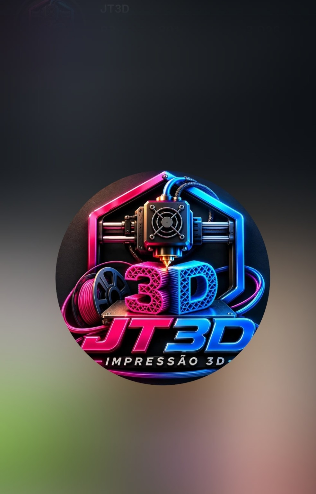

Envie fotos
Use fotos de vários ângulos para melhorar a reconstrução.

Envie fotos, escolha o estilo e gere um modelo preparado para impressão 3D.
Começar agora →Envie de 1 a 8 fotos do objeto ou pessoa.
Use fotos de vários ângulos para melhorar a reconstrução.
O backend envia as imagens ao motor de geração configurado.
Visualize, ajuste a escala e escolha a preparação.
Receba STL/3MF quando o processamento terminar.
Projetos serão salvos aqui quando você conectar login e banco de dados.